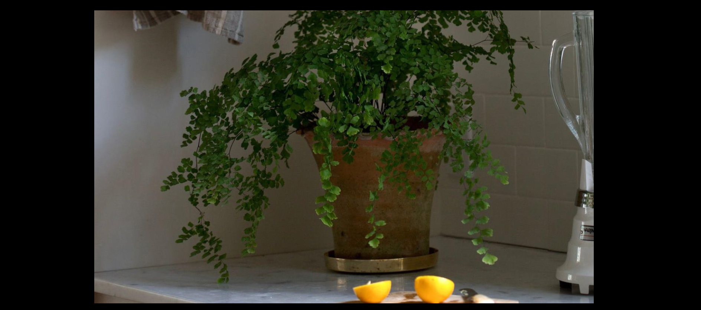

What matters most to you?
Synopsis
Act I
An offstage voice recalls a time when the human race "suddenly encountered a deadly threat to its very existence". A trio of 1960s street urchins named Crystal, Ronette, and Chiffon set the scene ("Little Shop of Horrors") and comment on the action throughout the show. Seymour Krelborn is a poor young man, an orphan living in an urban skid row. Audrey is a pretty blonde with a fashion sense that leans towards the tacky. They lament their stations in life and the urban blight in their neighborhood ("Skid Row (Downtown)"). They are co-workers at Mushnik's Skid Row Florists, a run-down flower shop owned and operated by the cranky Mr. Mushnik. Seymour has recently obtained a mysterious plant that looks like a large venus flytrap. While he was browsing the wholesale flower district, a sudden eclipse of the sun occurred, and when the light returned, the weird plant had appeared ("Da-Doo"). Seymour, who is secretly in love with Audrey, names the plant Audrey II in her honor.
The plant does not thrive in its new environment and appears to be dying. Seymour questions why it should be doing poorly, since he takes such good care of it. He accidentally pricks his finger on a rose thorn, which draws blood, and Audrey II's pod opens thirstily. Seymour realizes that Audrey II requires blood to survive and allows the plant to suckle from his finger ("Grow For Me"). As Audrey II grows, it becomes an attraction and starts generating brisk business for Mushnik. As the caretaker of the plant, the timid Seymour is suddenly regarded as a hero ("Ya Never Know"), while Audrey secretly longs to leave her abusive boyfriend. Her dream is to lead an ideal suburban life with Seymour, complete with a tract home, frozen dinners, and plastic on the furniture ("Somewhere That's Green").
Meanwhile, the employees at Mushnik's are sprucing up the flower shop because of the popularity of the rapidly growing Audrey II and the revenue that it is bringing in ("Closed for Renovation"). Orin Scrivello, a sadistic dentist, is Audrey's abusive boyfriend. Modeled after the "Leader of the pack" characters of the 1950s, Orin drives a motorcycle, wears leather, and enjoys bringing other people pain ("Dentist!"). Orin encourages Seymour to take the plant and get out of Skid Row. Realizing that his store's sudden profitability is completely dependent on the plant (and therefore on Seymour), Mushnik takes advantage of Seymour's innocence by offering to adopt him and make him a full partner in the business. Having always wanted a family, Seymour accepts, even though Mushnik has always yelled at him and treated him poorly ("Mushnik and Son"). However, Seymour is having difficulty providing enough blood to keep Audrey II healthy. When Seymour stops feeding the plant, Audrey II reveals that it can speak. It demands blood and promises that, if fed, it will make sure that all of Seymour's dreams come true. Seymour initially refuses, disputing Audrey II's claim that many people deserve to die, but he then witnesses Orin abusing Audrey. The plant presents this as a justification for killing Orin. Not realizing that he is being manipulated again, Seymour gives in to his baser instincts and agrees ("Feed Me (Git It)").
He sets up a late-night appointment with Orin, intending to kill him. However, Seymour loses his nerve and decides not to commit the crime. Unfortunately for Orin, who is getting high on nitrous oxide, the gas device is stuck in the "on" position, and he suffocates while asking Seymour to save him. Seymour cannot bring himself to shoot Orin but lets him die of asphyxiation ("Now (It's Just The Gas)"). Seymour feeds Orin's body to the now huge Audrey II, and the plant consumes it with ravenous glee ("Act I Finale").
Act II
"Suddenly, Seymour"
MENU0:08
The beginning of the last chorus of "Suddenly, Seymour", performed by Kerry Butler and Hunter Foster on the 2003 Broadway revival cast recording.
Problems playing this file? See media help.
The flower shop is much busier, and Seymour and Audrey have trouble keeping up with the onslaught of orders ("Call Back in the Morning"). Audrey confides to Seymour that she feels guilty about Orin's disappearance, because secretly she wished it. The two admit their feelings for one another, and Seymour promises that he will protect and care for Audrey from now on ("Suddenly, Seymour"). The two plan to leave together and start a new life, although Seymour mistakenly attributes Audrey's feelings to his newfound fame, not realizing that she loved him even before he found the plant.
Before they can go, Mushnik confronts Seymour about Orin's death. Mushnik has put two and two together: the bloody dentist's uniform, the drops of blood on the floor, and he has seen Seymour and Audrey kissing. Seymour denies killing Orin, but Mushnik wants him to give a statement to the police, who have begun investigating. Audrey II tells Seymour that he has to be rid of Mushnik or he will lose everything, including Audrey ("Suppertime"). Seymour tells Mushnik that he put the days' receipts inside Audrey II for safekeeping. Mushnik climbs inside the plant's gaping maw to search for the money, realizing the deception too late, and screams as he is devoured. Seymour now runs the flower shop, and reporters, salesmen, lawyers and agents approach him, promising him fame and fortune. Although tempted by the trappings of his success, Seymour realizes that it is only a matter of time before Audrey II will kill again and that he is morally responsible. He considers destroying the plant but believing that his fame is the only thing that is earning him Audrey's love, he is unable to do so ("The Meek Shall Inherit").
As Seymour works on his speech for a lecture tour, Audrey II again squalls for blood. Seymour threatens to kill it just as Audrey walks in asking when Mushnik will return from visiting his "sick sister". Seymour learns that Audrey would still love him without the fame and decides that Audrey II must die after the scheduled LIFE magazine interview at the shop. Audrey is confused and frightened by Seymour's ramblings, but she runs home by his order. That night, unable to sleep and distressed by Seymour's strange behavior, Audrey goes to the flower shop to talk with him. He is not there, and Audrey II begs her to water him. Not sensing the mortal danger, she approaches to water it, and a vine wraps around her and pulls her into the plant's gaping maw ("Sominex/Suppertime II"). Seymour arrives and attacks the plant in an attempt to save Audrey. He pulls her out, but Audrey is mortally wounded. Her dying wish is for Seymour to feed her to the plant after she dies so that they can always be together. She dies in his arms, and he reluctantly honors her request ("Somewhere That's Green" (reprise)). Seymour falls asleep as Audrey II grows small red flower buds.
The next day, Patrick Martin from the World Botanical Enterprises tells Seymour that his company wishes to sell leaf cuttings of Audrey II in florist shops across America. Seymour realizes the plant's evil plan: world conquest. He tries shooting, cutting, and poisoning the plant, but it has grown too hardy to kill. Seymour, in desperation, runs into its open jaws with a machete planning to kill it from the inside, but he is quickly eaten. Patrick, Crystal, Ronette, and Chiffon search for Seymour. Not finding him, Patrick tells the girls to take the cuttings.
Crystal, Ronette, and Chiffon relate that, following these events, other plants appeared across America, tricking innocent people into feeding them blood in exchange for fame and fortune. Out of the fog, Audrey II, bigger than ever, appears with opened new flowers revealing the faces of Seymour, Audrey, Mushnik and Orin, who beg that, no matter how persuasive the plants may be, they must not be fed ("Finale Ultimo: Don't Feed the Plants"). Audrey II slithers towards the audience threateningly (In the original Off-Broadway production, plant tendrils fell all over the audience, as if each audience member were to be pulled into the plant, while in the Broadway production, a monstrously huge Audrey II was projected out over the fifth row and the balcony seats, as if it would eat the audience members).